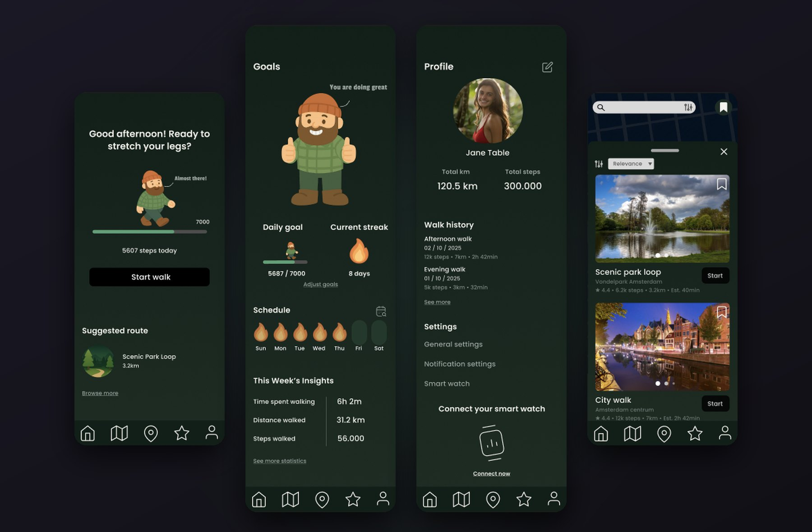
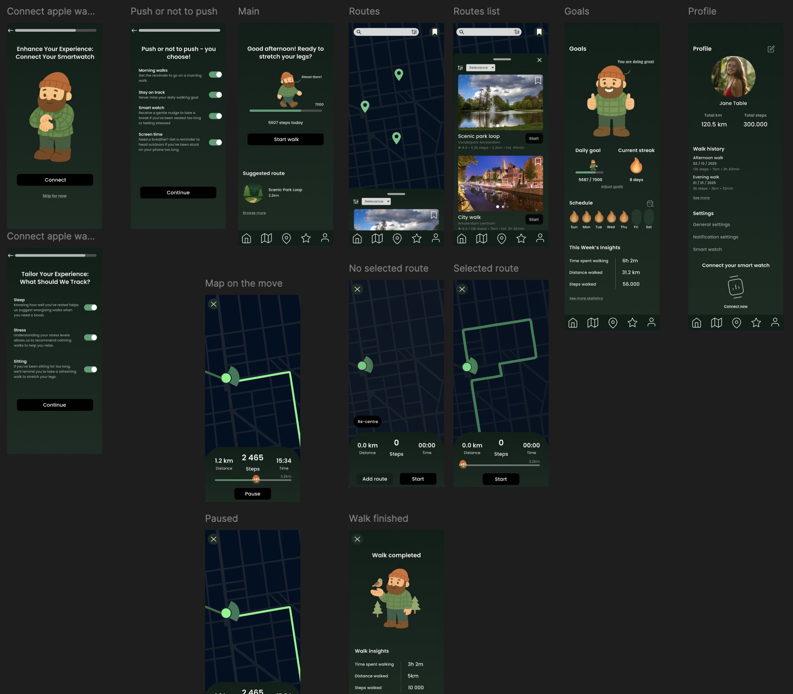
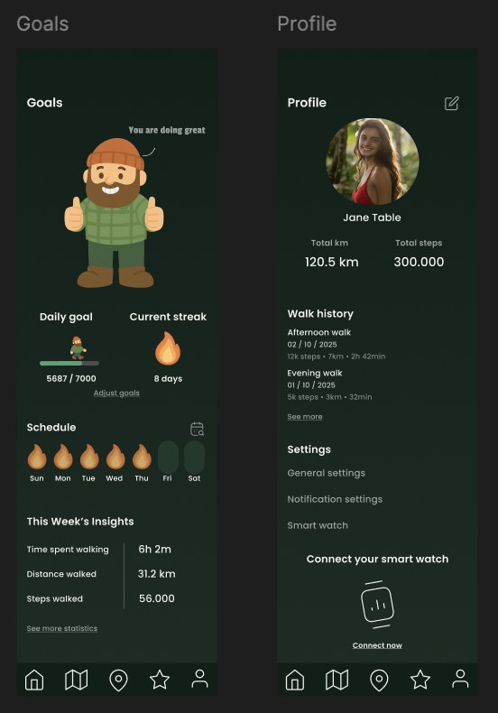
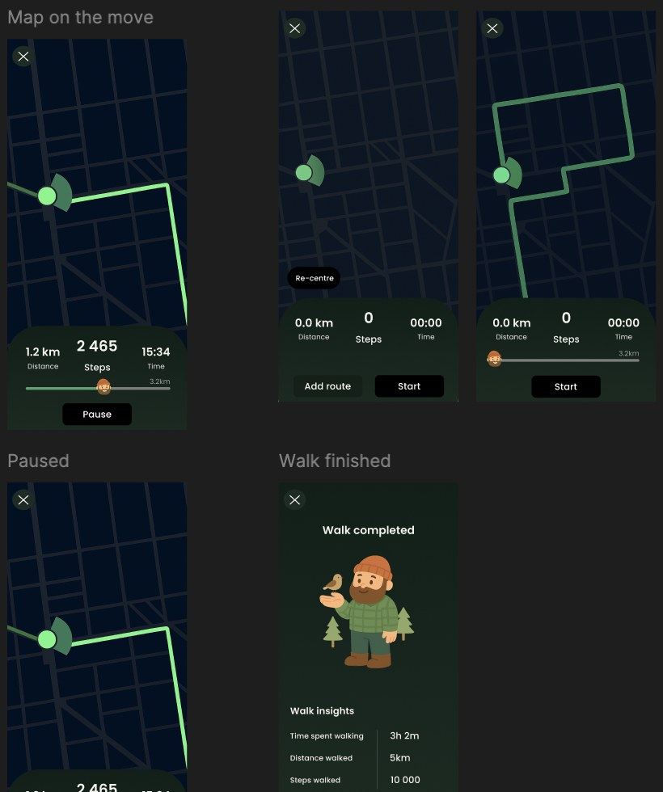

← All projects
Interaction · Prototype
Walkwise
Walkwise is a walking app that connects movement and mental wellbeing. It works with your smartwatch and turns daily goals into a streak, guided by a playful mascot. I designed and directed it on my own, from UX and UI to the prototype.

the flow
From first connection to the finished walk.
The prototype covers the whole journey: connecting a smartwatch, choosing what to track, finding a route, walking it and looking back at the day.

the details
A mascot that keeps count.
A bearded walker guides you through the app. He cheers you on at the home screen and the goals screen, where your streak shows as one flame per day.


looking back
What I'd do differently.
I'd look at how the experience could become more personalised to different motivations for walking.
Next up
Buckfiets